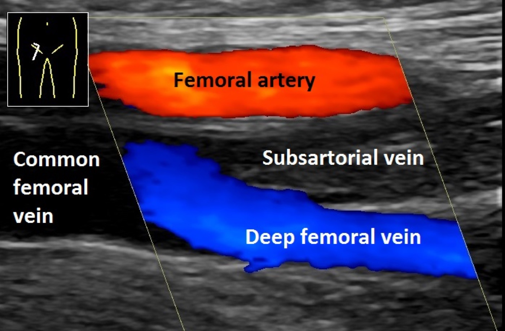

Página 4 · Diagnóstico — GO ≠ clínica geral
Confirmar — e o D-dímero que morre na porta da GO
Qual é o primeiro exame a pedir — e qual exame da clínica geral você deve esquecer aqui?
A página gira em torno de uma inversão: o exame que na clínica é ouro, na GO é lixo. A pergunta dupla organiza os dois movimentos — o que pedir e o que abandonar — e é a primeira cristalização explícita da lente "GO ≠ clínica geral".
Suspeita clínica e o edema que conta: o assimétrico ≥2 cm
O diagnóstico começa pela suspeita clínica — e ela pesa muito aqui. O problema é o edema: a gestante tem edema fisiológico, e no final da gestação a grande maioria das mulheres tem as pernas inchadas. Edema bilateral, simétrico, é regra e não significa trombose. O que levanta a suspeita de TVP é o edema assimétrico — um lado nitidamente maior que o outro, com pelo menos ~2 cm de diferença de circunferência na perna. Grave esse número no contexto obstétrico: são 2 cm.
Doppler de MMII: o primeiro exame, que resolve a maioria
Confirmada a suspeita, o primeiro exame é o Doppler de membros inferiores (ultrassom com Doppler de MMII). Ele é acessível, não irradia e resolve a imensa maioria dos casos — mostra a veia não compressível e o trombo. Para a TVP de território habitual, o Doppler fecha o diagnóstico.
O buraco: trombose alta/pélvica com Doppler falso-negativo
Existe uma armadilha topográfica. O útero gravídico aumenta a pressão e a estase dos vasos pélvicos, e a paciente pode fazer uma trombose mais alta — ilíaca, pélvica — que não está no alcance do Doppler de MMII. Nesse cenário o Doppler ajuda menos e pode vir falso-negativo: a perna parece limpa, mas o trombo está acima. Quando o quadro clínico é muito clássico e o Doppler de MMII não esclareceu ou sugere topografia alta, o próximo passo é a angiorressonância ou a angio-TC de pelve, que enxergam o território ilíaco/pélvico.
D-dímero NÃO se aplica na GO
Aqui está a estrela negativa da página. Na clínica geral, o D-dímero é um exame querido pelo seu valor preditivo negativo: se vem baixo, praticamente exclui trombose. Na gestante, esqueça o D-dímero. O motivo é fisiológico: o D-dímero aumenta fisiologicamente na gestação — sobe por conta própria, sem nenhuma trombose. Com ele sempre elevado, você perde exatamente aquilo que o tornava útil: o valor preditivo negativo não se aproveita, porque ele nunca vai estar baixo o suficiente para excluir nada. Não é só para a TVP — vale também na investigação do TEP. E não é opinião: nenhum fluxograma ou protocolo de TEV no ciclo gravídico-puerperal inclui o D-dímero. Ele morre na porta da GO.
A investigação do TEP: descartar o diferencial e fechar com angio-TC ou V/Q
No TEP, a avaliação básica muda de função: ela serve para investigar e descartar outras causas (o diagnóstico diferencial), não para confirmar o TEP. A avaliação inicial inclui gasometria, radiografia de tórax (afastar outras causas de dispneia) e ECG. Um ponto de prova: o ecocardiograma não confirma o diagnóstico de TEP, mas pode mostrar disfunção de ventrículo direito — e isso é critério de pior prognóstico, não critério diagnóstico. Confundir os dois é erro clássico. Para fechar o TEP na gestante, os exames de escolha são a angio-TC de tórax ou a cintilografia pulmonar de ventilação-perfusão (V/Q).

A veia trombosada aparece preenchida por material ecogênico e sem fluxo colorido, ao lado da artéria pérvia. O fechamento vem da perda de compressibilidade venosa; o Doppler reforça mostrando a ausência de fluxo.
Wikimedia Commons — Ultrasonography of deep vein thrombosis of the femoral vein (annotated). Licença CC0 / domínio público · fonte
Quiz — fixação
Gestante de 36 semanas, dispneia súbita, suspeita de TEP. Qual conduta está correta?
- C — exames de escolha. Para fechar o TEP na gestante, angio-TC de tórax ou cintilografia V/Q.
- A. Erro-mãe da lente GO≠clínica: o D-dímero sobe fisiologicamente, perde o valor preditivo negativo e não exclui nada.
- B. Confunde prognóstico com diagnóstico: a disfunção de VD indica gravidade/pior prognóstico, nunca confirma o TEP.
- D. Inverte a função da avaliação básica: RX, gaso e ECG servem para descartar outras causas, não para confirmar.
Sobre o Doppler de MMII na investigação da TVP da gestante:
- B — o buraco topográfico. O Doppler fecha a maioria, mas não alcança a topografia ilíaca/pélvica alta — daí o falso-negativo e a angio-RM/TC de pelve.
- A. Excesso de confiança: negativo não exclui a trombose alta que o transdutor não vê.
- C. Ressuscita o D-dímero, inútil aqui.
- D. Cria restrição temporal inexistente — o Doppler vale na gestação e no puerpério.
Confirmado o evento, a pergunta vira terapêutica: o que anticoagula essa paciente, por quanto tempo, e o que está terminantemente proibido.